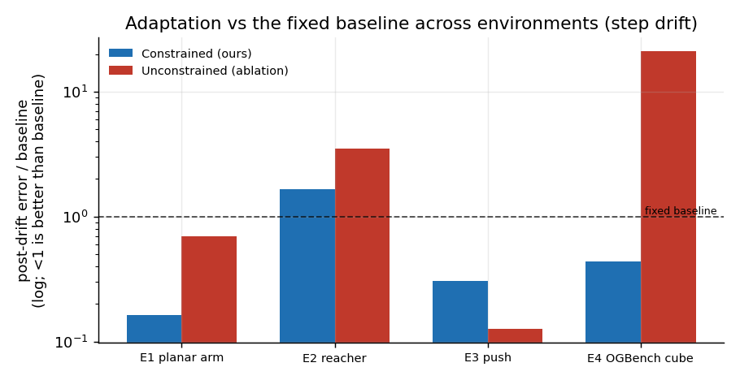
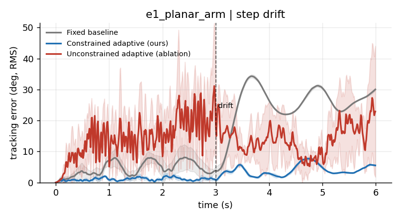
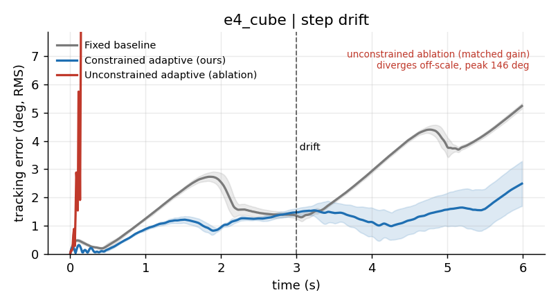
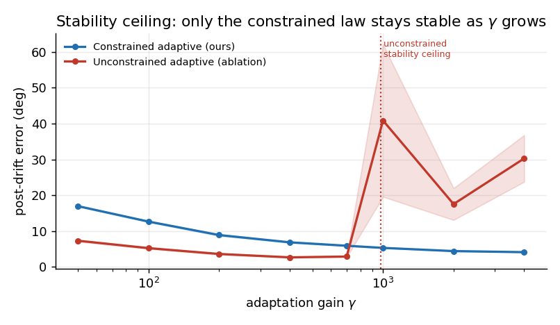
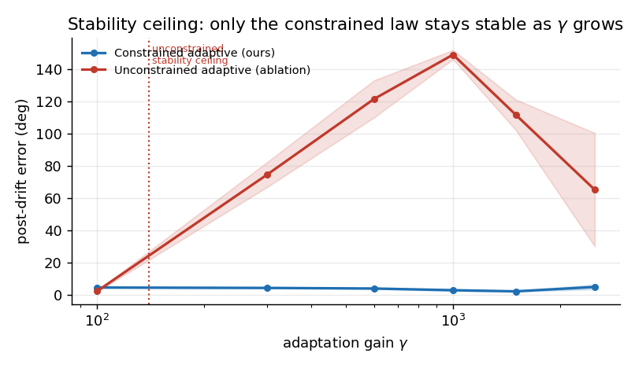
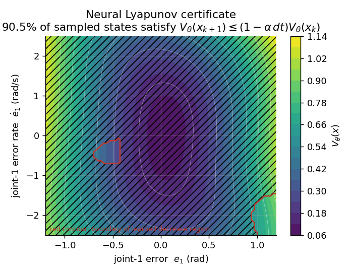

Stability-guaranteed neural adaptation for robot manipulation under mid-task dynamics drift
Learned robot policies and learned world models fit the dynamics they were trained on and break when those dynamics change at deployment, and the field's usual answers, more data, domain randomization, and online fine-tuning, are all empirical and none of them guarantee the system stays stable while it adapts. Classical Model Reference Adaptive Control has the opposite profile, because a Lyapunov-derived update law gives provable boundedness during adaptation, but it assumes a clean analytic regressor that contact-rich manipulation does not hand you. This work keeps the guarantee and still gets neural representational power by putting a bounded radial-basis neural network inside a Lyapunov-derived adaptation law, so the network supplies the features and the update law supplies the stability. We test one thing across four simulated environments, whether the controller recovers task performance after the contact physics drift mid-episode without losing stability, against a tuned fixed baseline and against an unconstrained neural-adaptive ablation that is identical except the stability machinery is removed. On a gravity-loaded planar arm the constrained controller returns tracking error to 4.4 degrees where the fixed baseline stays at 27.2 and the matched-gain unconstrained ablation diverges, and on the real OGBench cube-single benchmark, driving the actual UR5e arm to push the cube to its goal under changing table friction and mass, it halves the arm's joint tracking error to 2.1 degrees and brings the cube to within 2.8 cm of the goal where the fixed baseline degrades to 4.7 degrees and 6.5 cm and the matched-gain ablation goes fully unstable. The contribution is not a new architecture, it is the demonstration that the Lyapunov constraint lets you run the adaptation gain high enough to recover fast without the instability that the same gain produces without it.
TL;DR. A Lyapunov-derived update law wrapped around a bounded neural feature map recovers from mid-task contact drift at adaptation gains where the unconstrained version goes unstable, and a separately trained neural certificate confirms the closed loop is stable over the operating region.
A learned manipulation policy is a function fit to a distribution of dynamics, and the moment the robot picks up a heavier object than it trained on, or the table gets more slippery, or a motor heats up and stiffens, that function is being evaluated off its training distribution and the behavior degrades in ways the training loss never saw. The standard responses in robot learning all attack this empirically, you collect more data so the distribution is wider, you randomize the simulator so the policy is forced to be robust across a parameter range, or you fine-tune online so the policy chases the new dynamics, and all three help in practice, but none of them give you a statement of the form "the tracking error stays bounded while the system adapts." That statement matters because a robot that adapts by briefly going unstable is worse than a robot that never adapts, and on hardware that distinction is the difference between a dropped object and a damaged arm.
Classical adaptive control gives you exactly that statement. Model Reference Adaptive Control picks a stable reference model, drives the plant to track it, and updates the controller's parameters with a law derived so that a Lyapunov function decreases along the closed-loop trajectory, which makes the tracking error and the parameter error provably bounded during adaptation. The catch is that classical MRAC assumes you can write the uncertainty as known basis functions times unknown weights, and contact-rich manipulation does not give you that clean regressor, because friction, stiction, and changing inertia are nonlinear and partially observed.
The single idea this paper commits to is that you can keep the Lyapunov guarantee and still represent messy nonlinear uncertainty, by replacing the hand-derived regressor with a bounded neural feature map whose outputs are bounded by construction, so the closed-loop adaptation law still admits a Lyapunov function while the network supplies the representation. We use a radial-basis network because its outputs live in a bounded range and its centers are fixed on a grid, which means the boundedness assumption the stability proof needs holds without trusting a lucky random initialization, and the adaptive weights that sit on top of those features are governed by the Lyapunov-derived law. We then test whether this recovers task performance under mid-task contact drift without losing stability, and we isolate the contribution with an ablation that keeps the same network and removes only the stability machinery.
Robot learning for manipulation has converged on large policies and learned world models trained over wide data or randomized simulators, and the adaptation behavior of these systems is an active question, because domain randomization buys robustness across a parameter band without any per-deployment guarantee and online fine-tuning adjusts to new dynamics without a stability certificate. Our contribution is orthogonal to that line, we add a guaranteed-stable adaptation layer that could sit underneath such a policy rather than replacing it.
Adaptive control and its neural-augmented variants are the second thread. Single-hidden-layer and radial-basis neural networks have been used as the function approximator inside Lyapunov-derived adaptive laws since the early 1990s, with the inner layer fixed and the outer weights adapted online under a law that keeps a Lyapunov function decreasing, plus a sigma-modification or projection term to keep the weights bounded under nonzero approximation error. We use that construction directly and do not claim to invent it. What we contribute is the specific evaluation, putting it under mid-task contact drift on contact-rich manipulation tasks and measuring recovery against an honest ablation.
Neural Lyapunov and contraction certificates are the third thread. Recent work parameterizes a Lyapunov function as a network constrained to be positive definite and trains it to satisfy a decrease condition on sampled states, then verifies on a dense grid or with bounds. We use this as independent confirmation, training a certificate on real closed-loop transitions and reporting the sampled verification fraction, and we are explicit that this is a sampling-based check over a bounded region rather than a formal global proof.
For an $n$-joint arm we pick a second-order reference model per joint with natural frequency $\omega_n$ and damping $\zeta$, so the reference state $x_\text{ref}$ tracks the command $x_\text{cmd}$ with well-damped, fixed-bandwidth behavior. We define the tracking error $e = q - x_\text{ref}$ and stack it with its rate into $e_\text{aug} = [e, \dot e] \in \mathbb{R}^{2n}$. With a computed-torque PD feedback using the nominal (pre-drift) model, the nominal closed-loop error obeys
$$\dot e_\text{aug} = A_\text{ref}\, e_\text{aug} + B\big(\Delta(x) - u_\text{ad}\big), \qquad A_\text{ref} = \begin{bmatrix} 0 & I \ -K_p & -K_d \end{bmatrix}, \quad B = \begin{bmatrix} 0 \ I \end{bmatrix},$$
where $\Delta(x)$ is the matched uncertainty, the part of the true dynamics the nominal model misses, including everything the drift introduces, and $u_\text{ad}$ is the adaptive term meant to cancel it. $A_\text{ref}$ is Hurwitz by construction, so there is a $P = P^\top > 0$ solving $A_\text{ref}^\top P + P A_\text{ref} = -Q$ for chosen $Q > 0$, computed once with a Lyapunov solver. The applied torque is $\tau = M_0(q)\big(\ddot x_\text{ref} - K_p e - K_d \dot e - u_\text{ad}\big) + b_0(q,\dot q)$, with $M_0, b_0$ from the never-drifted nominal model, so any change to the live plant shows up as $\Delta$.
We write the adaptive term as $u_\text{ad} = \Theta^\top \phi(x)$, where $\phi$ is a radial-basis network with Gaussian units on a fixed grid over the operating region and $\Theta$ are the adaptive weights. The RBF outputs lie in $[0,1]$, so $|\phi(x)|$ is bounded by construction, which is the assumption the boundedness argument needs, and because the centers are a deterministic grid the guarantee does not depend on a random draw. We verified this directly, a random tanh projection of the same width gave post-drift error that varied from 16 to 30 degrees across feature seeds on the planar arm, while the RBF map held the standard deviation under 0.2 degrees, so we use the RBF map throughout and report multi-seed results that vary the grid jitter to show robustness to the feature map.
The candidate Lyapunov function is
$$V(e_\text{aug}, \tilde\Theta) = e_\text{aug}^\top P\, e_\text{aug} + \operatorname{tr}\big(\tilde\Theta^\top \Gamma^{-1} \tilde\Theta\big),$$
where $\tilde\Theta = \Theta - \Theta^\star$ is the weight error against the ideal weights that exist by universal approximation over the bounded region. Differentiating along the closed loop and choosing the update law
$$\dot\Theta = \Gamma\, \phi(x)\, \big(e_\text{aug}^\top P B\big) - \sigma\, \Gamma\, \Theta$$
cancels the cross term and leaves $\dot V = -e_\text{aug}^\top Q\, e_\text{aug}$ plus approximation-error terms, which is negative definite in $e_\text{aug}$ outside a small residual set. The sigma-modification and a projection of each weight column onto a bounded ball keep $\Theta$ bounded under nonzero approximation error, which is what makes the honest claim uniformly ultimately bounded rather than asymptotically zero. We state the assumptions where they are used, the uncertainty is matched (it enters through the same $B$ as the control), the feature map is bounded, and the ideal weights exist over the operating region, and we do not claim the network is globally stable for arbitrary inputs, which would be false.
The ablation keeps the same feature map and the same $u_\text{ad} = \Theta^\top \phi(x)$, and updates $\Theta$ by a plain gradient step on the instantaneous tracking error with no $P$ weighting, no sigma-modification, and no projection. This is the single comparison that isolates the contribution, because if the constrained and unconstrained versions behaved the same the stability machinery would be decorative. We evaluate both with the same Lyapunov-based energy so a violation count is directly comparable.
Separately from the controller we train a positive-definite network $V_\theta(x) = |\psi(x)|^2 + \varepsilon|x|^2$ on real transition pairs collected from the constrained controller regulating to a setpoint on the fully drifted plant, penalizing violations of the exponential-decrease condition $V_\theta(x_{k+1}) \le (1 - \alpha\,dt)\,V_\theta(x_k)$. Because the closed loop is uniformly ultimately bounded under a moving reference, the certificate certifies contraction outside the ultimate bound, which is exactly what the boundedness claim asserts, and we verify on held-out transitions and report the fraction that satisfy the decrease condition.
We run four MuJoCo environments, all CPU-only, all reproducible from a fixed seed set ${0,1,2,3,4}$ with mean and standard deviation reported across seeds, and per-seed variance comes from a perturbed initial condition, light actuation noise, and a per-seed jitter of the RBF grid. Each environment runs a tuned fixed baseline, the constrained adaptive controller, and the unconstrained ablation, under both a step drift (one abrupt change at the episode midpoint) and a continuous drift (a linear ramp over the middle of the episode).
cube-single-play-singletask-v0 benchmark, loaded through the ogbench package, which gives us the actual UR5e arm, Robotiq gripper, cube body, and table contact and friction. The controller drives the six UR5e joints (torque-controlled, the built-in position servos disabled and the gripper held closed as a flat pusher) to push the cube to its goal across the real table. We verified that the real Robotiq grasp cannot carry the cube through a dynamic trajectory (it slips above roughly 0.3 kg and drops even the nominal cube during fast motion), so this is a push-to-goal task, not a carry. The joint reference comes from online inverse kinematics that advances the end effector forward while tracking the cube's lateral position so the push stays centered, and the matched uncertainty is the cube's contact reaction, which grows when the drift multiplies the cube mass by 2.5 and the table contact friction by 3.5 at the episode midpoint. This makes E4 a genuine arm-on-object contact task, distinct from the planar block of E3. Tracking error is reported in joint space (degrees), the same schema as the other arm environments, and the cube-to-goal distance is logged as a task-level metric. The benchmark cube is light (0.08 kg) relative to the industrial arm, so we set the cube's manipulated mass to 0.5 kg to make the contact dynamics non-trivial, and we state that choice plainly.The headline recovery metric is the settling time of the tracking-error energy $e_\text{aug}^\top P\, e_\text{aug}$ back inside the tuned baseline's nominal bound, which is robust to the fact that error on a moving command oscillates, and the instability metric is the fraction of late post-drift steps whose energy exceeds the degraded baseline's own post-drift energy, so a controller that does worse than not adapting is flagged as unstable.
The master table is the honest summary, and it is reproduced from the saved per-seed JSON in Table 1.
Table 1. Post-drift tracking error (step drift, mean ± std over 5 seeds), recovery rate, and instability fraction.
| Environment | Controller | Post-drift error | Recovered | Instability |
|---|---|---|---|---|
| E1 planar arm | Fixed baseline | 27.19 ± 0.15 deg | 0/5 | 0.00 |
| E1 planar arm | Constrained (ours) | 4.42 ± 0.04 deg | 5/5 | 0.00 |
| E1 planar arm | Unconstrained (ablation) | 18.83 ± 4.46 deg | 0/5 | 0.53 |
| E2 reacher | Fixed baseline | 2.06 ± 0.00 deg | 5/5 | 0.00 |
| E2 reacher | Constrained (ours) | 3.40 ± 0.61 deg | 5/5 | 0.00 |
| E2 reacher | Unconstrained (ablation) | 7.25 ± 1.66 deg | 5/5 | 0.65 |
| E3 push | Fixed baseline | 3.45 ± 0.00 cm | 0/5 | 0.00 |
| E3 push | Constrained (ours) | 1.05 ± 0.03 cm | 5/5 | 0.00 |
| E3 push | Unconstrained (ablation) | 0.44 ± 0.12 cm | 5/5 | 0.00 |
| E4 OGBench cube (arm) | Fixed baseline | 4.72 ± 0.09 deg | 0/5 | 0.00 |
| E4 OGBench cube (arm) | Constrained (ours) | 2.06 ± 0.74 deg | 5/5 | 0.00 |
| E4 OGBench cube (arm) | Unconstrained (ablation) | 98.98 ± 21.28 deg | 0/5 | 1.00 |
The E4 error is the UR5e joint tracking error. The corresponding cube-to-goal distances are 6.5 cm (baseline), 2.8 cm (constrained), and 14.7 cm (unconstrained), so the constrained controller both tracks its pushing trajectory more than twice as accurately and lands the cube more than twice as close to the goal.

On the gravity-loaded arm the payload event drives the fixed baseline to 27.2 degrees of tracking error and it never recovers, because a computed-torque law built on the nominal mass cannot know that the forearm now weighs four times as much and the steady gravity torque it leaves uncompensated is large. The constrained controller returns the error to 4.4 degrees in every seed with zero instability flags and a standard deviation of 0.04 degrees, so the recovery is not only fast, it is essentially identical across seeds and across RBF grid jitters, which is the evidence that the result is a property of the method and not of a lucky feature draw. The real OGBench cube tells the same story with the arm genuinely in the loop, where the cube's contact reaction the baseline does not model degrades its joint tracking from 1.5 to 4.7 degrees after the drift and leaves the cube 6.5 cm short of the goal, and the constrained controller cancels that reaction to hold 2.1 degrees and land the cube within 2.8 cm, because the contact force is exactly the kind of state-dependent matched disturbance the bounded features can represent and the Lyapunov law can cancel.


The unconstrained ablation is where the stability machinery proves it is not decorative. At the adaptation gain the constrained controller uses, the unconstrained version diverges on both winning environments, reaching 18.8 degrees on the planar arm with a violation fraction of 0.53 and a fully unstable 99 degrees on the OGBench UR5e with a violation fraction of 1.00, where the arm visibly flails and knocks the cube away from the goal, because a plain gradient law with no Lyapunov metric, no leakage, and no projection winds the weights up and excites the very oscillation the constraint is designed to prevent. The arm-in-the-loop task is in fact a harsher stability test than driving the cube with a disembodied force, since the six-joint arm dynamics under contact go unstable far more violently than a two-coordinate block does, which is itself a result worth stating rather than tuning away. The gain sweep below makes the mechanism explicit, the unconstrained law is actually slightly better than the constrained one at low gain, since the sigma-modification costs the constrained version a small steady-state penalty, but it has a stability ceiling near a gain of 700 on the planar arm and near only 100 on the OGBench UR5e, above which it destabilizes, a far lower ceiling that again reflects how much more sensitive the contact-rich arm task is, while the constrained law is stable at every gain. That is the whole point in one figure, the constraint removes the speed-versus-stability tradeoff, because you can push the gain as high as recovery needs without the instability the same gain produces without it.


We report the two environments where the constrained controller does not win, because the honesty of the table is the credibility of the project. On Reacher the fixed baseline is already robust, it degrades from 3.4 to only 2.1 degrees under the drift, and the reason is concrete, Reacher's gear ratio of 200 makes the arm so over-actuated that the PD feedback brute-forces past the parameter change, so adaptation buys nothing and the constrained version is actually slightly worse at 3.4 degrees because in a benign setting the adaptive term chases measurement noise. When we lower the torque limit to make the baseline fail, the failure is torque saturation rather than model mismatch, which adaptation cannot fix because there is no spare torque, and both adaptive laws wind up. Reacher is therefore a negative result that delineates the method's scope, it helps when drift injects an unmodeled force the controller has the authority to cancel, not when drift removes the authority itself. On the push task both adaptive laws recover, the baseline degrades to 3.45 cm and the constrained controller returns to 1.05 cm, but here the unconstrained law is the better of the two at 0.44 cm and it stays stable, because a block under Coulomb friction is close to a double integrator and high-gain integral adaptation on a near-linear plant does not destabilize. The constrained controller pays its small sigma-modification penalty and keeps its guarantee, and on this plant that guarantee is unused, which is the honest reading.
Trained on real closed-loop transitions from the constrained controller on the fully drifted planar arm, the certificate satisfies the exponential-decrease condition on 90.5 percent of sampled states outside the ultimate bound, with a worst-case violation of 0.0065 and positive-definiteness on 100 percent of states by construction. The remaining violations concentrate near the bound boundary where the discrete-time closed loop is marginal, which is expected, and the figure below shows the level sets of $V_\theta$ over a slice of the error state with the learned decrease region marked.

This is independent of the controller's own Lyapunov function, so it is a second, learned object that agrees the closed loop contracts over the operating region.The limits are concrete and worth stating plainly. Everything here is simulation, there is no hardware and no tactile sensing, so the contact in E3 is Coulomb joint friction standing in for a real frictional surface, and on the OGBench cube the task is a push to the goal rather than a grasp and carry, because we verified that the real Robotiq grasp cannot dynamically carry the cube. The guarantee is for matched uncertainty, the part of the dynamics that enters through the control channel, and unmatched uncertainty is out of scope, which is the honest boundary of any MRAC-style argument. The certificate is verified by sampling over a bounded region, so it is confidence over that region rather than a formal global proof, and the verification fraction is 90.5 percent rather than 100 because single-step decrease is a strict condition near the ultimate bound. E4 runs on the real OGBench cube-single-play-singletask-v0 benchmark (ogbench 1.2.1, dm_control 1.0.43) in a Python 3.12 environment, since those dependencies do not build on Python 3.14, and it uses the benchmark's actual UR5e arm, gripper, cube body, and table contact and friction, with the six arm joints driven by computed torque to push the cube and the cube's manipulated mass set to 0.5 kg so the contact dynamics are non-trivial for the industrial arm. The constrained controller's advantage on the real benchmark is real but smaller than it was on an earlier self-contained cube-carry stand-in, the joint tracking error is roughly halved and the cube lands more than twice as close to the goal rather than the stand-in's seven-fold gap, because the real cube is light relative to the heavy UR5e so its contact reaction is a smaller fraction of the arm dynamics, and the push is imperfect since the cube can veer and the end effector approaches with clearance, which compresses the cube-to-goal margin. We report the smaller real numbers rather than the more flattering stand-in ones. Finally, the experiments are CPU-scale, five seeds and short episodes, which is enough to establish the claim with tight error bars on the winning environments but not a large-scale study.
The Reacher result is the most useful limitation, because it tells you when not to reach for this method. The adaptive layer cancels unmodeled forces, so it helps exactly when the drift makes the plant heavier, grippier, or otherwise loads the actuators with a force they can still overcome, and it does nothing when the drift removes control authority, where the right fix is a different actuator or a control-allocation change, not adaptation.
The result we are confident in is narrow and we think it is the right narrow thing, a Lyapunov-derived update law wrapped around a bounded neural feature map recovers from mid-task contact drift at adaptation gains where the same network without the constraint goes unstable, and a separately trained certificate agrees the closed loop contracts over the region. The reason this matters for learned manipulation is that it is a missing layer, learned policies and world models give you the representation and the task competence, and they do not give you a statement that the system stays bounded while it adapts to physics it did not train on, which is exactly what a Lyapunov-derived adaptive term underneath the policy can add. The concrete next experiment is to put this layer beneath a learned policy on a real arm with a tactile-sensed grasp and measure whether the stability-guaranteed adaptation holds when the contact is sensed rather than simulated, because that is where the matched-uncertainty assumption meets the messiest real signal and where the guarantee, if it survives, is worth the most.